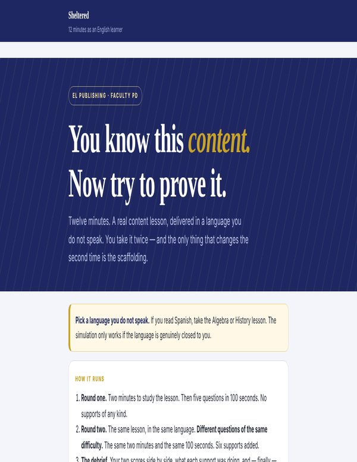

Free, classroom-ready resources for teaching English learners — built in a Mississippi high school, used in any of them.
Richard A. Daniel, M.Ed. · ENL/EL Specialist, Laurel High School · 31 years in Mississippi, Alabama and Georgia classrooms · NBCT ENL candidate
Now showing · released Oct 9
Simulation · 12 minutes
Sit a real lesson in a language you don't speak. Then sit it again with supports.

NEWFour paths through the hub. Pick the one that describes you and take the steps in order — or open the full index if you already know what you came for.
All 57 resources in one sortable table — by name, by who they are for, by format. The twenty worth starting with are starred.
EL Publishing is where I put the materials I build for my own classroom. Everything is designed around one idea: English learners do not need easier content, they need the language that carries it.
The resources assume a real high school — mixed proficiency levels in one room, content teachers with thirty students and one planning period, and a compliance file that has to hold up. Every packet includes a differentiated version for newcomers through challenge level, because that is what a single class period actually requires.